Query
SCR-QA-003·004·005·006·007 · Liste · Anlegen · Beantworten · Abschließen · Erneute Anfrage
Query-Liste
- 1.1Bildschirmaufbau
- 1.2Zeilenaktionsmenü
1.1Bildschirmaufbau
Überblick
Auf dieser Seite bearbeiten Sie an einer Stelle die Klärungsanfragen (Query) zu den eingegebenen Daten. Von oben nach unten sind Kennzahlkarten · Filter · Liste angeordnet. Jede Zeile der Liste ist eine Query. Antworten, Abschließen und erneutes Anfragen beginnen alle auf dieser Seite. Die Bearbeitung läuft über das Aktionsmenü am rechten Ende der Zeile 1.2.
Bildschirmbeschreibung
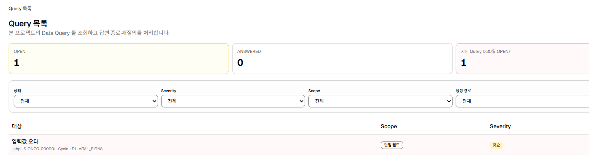
Status-Filter: Grenzen Sie die Liste nach Unbearbeitet · Beantwortet · Abgeschlossen usw. ein.
Severity-Filter: Grenzen Sie die Liste nach Gering · Wichtig · Kritisch ein.
Scope-Filter: Grenzen Sie die Liste nach dem Umfang ein.
Erstellungsweg-Filter: Grenzen Sie die Liste nach Automatisch (Regel) und Manuell ein. Automatisch sind die Query, die eine Validierungsregel erzeugt hat.
Hinweis unter dem Titel: „Hier rufen Sie die Data Queries dieses Projekts ab und bearbeiten Antworten, Abschluss und erneute Anfragen.“
OPEN: Anzahl der Query, auf die noch keine Antwort eingegangen ist.
ANSWERED: Anzahl der Query, auf die eine Antwort vorliegt, die aber noch nicht abgeschlossen ist.
Überfällige Query (>30 Tage OPEN): Anzahl der Query, die vor mehr als 30 Tagen angelegt wurden und noch keine Antwort haben. Beantwortete Query zählen hier auch dann nicht mit, wenn sie schon sehr lange zurückliegen.
Ziel-Spalte: Hier steht der Query-Titel. Wenn Sie den Titel auswählen, gelangen Sie zu den Query-Details, in denen Sie den Bearbeitungsverlauf und den Klärungsstatus jedes Ziels prüfen.
Scope-Spalte: Es gibt vier Werte: Einzelfeld · Feldübergreifend · CRF-übergreifend · Visit-übergreifend.
Severity-Spalte: Es gibt drei Werte: Gering · Wichtig · Kritisch.
Die kleine Schrift unter dem Titel zeigt Feld · Proband · Besuch · CRF. Daran erkennen Sie, zu welchen Daten die Query gehört.
Query-Status (6 Werte)
| Status | Bedeutung | Nächster Schritt |
|---|---|---|
| Unbearbeitet | Die Query wartet auf eine Antwort. | Die zuständige Person beantwortet die Query. |
| Beantwortet | Eine Antwort ist erfasst. | Der Datenmanager schließt die Query ab. |
| Teilweise beantwortet | Nur ein Teil der Ziele ist geklärt. | Bearbeiten Sie die übrigen Ziele. |
| Abgeschlossen | Die Klärung ist bestätigt. | Keine. Bei Bedarf eine erneute Anfrage stellen. |
| Erneut angefragt | Die Query wurde abgeschlossen und danach erneut angefragt. | Die neu entstandene Query beantworten. |
| Abgebrochen | Die Query wurde verworfen. | Keine. Auf dieser Seite gibt es keine Funktion zum Abbrechen. |
Zu beachten
Leicht missverständliches Verhalten
- • Der Auditor kann diese Seite nur lesen. Nutzer, die keine Bearbeitungsberechtigung haben (Anlegen · Beantworten · Abschließen · Erneut anfragen), sehen alle Aktionen inaktiv angezeigt. Das gilt auch, wenn das Projekt abgeschlossen oder archiviert ist.
1.2Zeilenaktionsmenü
Überblick
Dies ist der rechte Bereich derselben Seite wie in 1.1. Die Query-Bearbeitung erfolgt zeilenweise. Wählen Sie am rechten Ende der Zeile das ⋯ aus, um das Menü zu öffnen. Welche Punkte im Menü stehen, hängt vom Status der Zeile und von Ihren Berechtigungen ab. In der Abbildung ist eine Zeile mit dem Status Beantwortet zu sehen. Dort werden Antworten und Abschließen angezeigt, Erneut anfragen dagegen nicht. Erneut anfragen erscheint nur bei Zeilen mit dem Status Abgeschlossen.
Bildschirmbeschreibung
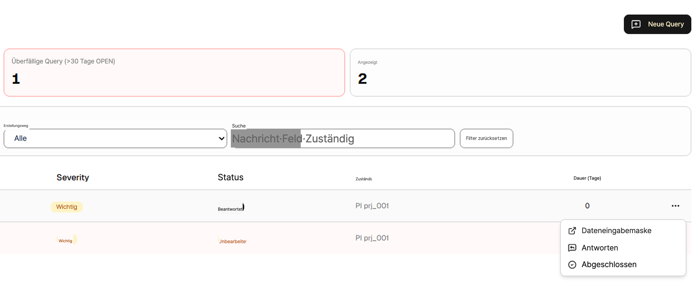
Neue Query: Legen Sie selbst eine Query an 2.1. Sichtbar nur für Prüfarzt, Monitor und Datenmanager.
Suche: Grenzen Sie nach Nachricht · Feld · Zuständig ein.
Filter zurücksetzen: hebt alle gesetzten Bedingungen auf einmal auf.
⋯: öffnet das Aktionsmenü dieser Zeile. Wenn in der Zeile nichts möglich ist, wird ⋯ selbst nicht angezeigt.
Dateneingabemaske: wechselt zur CRF-Eingabemaske, auf die sich die Query bezieht 3.2. Das ist nur ein Wechsel der Ansicht und deshalb unabhängig von den Berechtigungen sichtbar. Auch Auditoren können es nutzen.
Antworten: öffnet das Antwortfenster 3.1. Das Fenster öffnet sich bei den Status Unbearbeitet · Beantwortet · Erneut angefragt.
Abschließen: öffnet das Abschlussfenster 4.1. Das Fenster öffnet sich nur im Status Beantwortet, und zwar nur für Datenmanager.
Karte Überfällige Query (>30 Tage OPEN): der übrige Teil der in 1.1 beschriebenen Kennzahlen.
Angezeigt: die Anzahl, die nach dem Anwenden der Filter gerade auf dem Bildschirm zu sehen ist. Sie folgt einer anderen Grundlage als die drei Karten davor.
Erstellungsweg-Filter: grenzt nach Automatisch (Regel) und Manuell ein.
Status-Spalte: Dieser Wert bestimmt, was im Menü erscheint.
Zuständig-Spalte: Nur die zuständige Person oder der Ersteller kann beantworten.
Dauer (Tage)-Spalte: die Anzahl der Tage seit der Anlage. Unbearbeitete Query mit mehr als 30 Tagen werden in der ganzen Zeile rot angezeigt.
Die erste Zeile ist Beantwortet, daher stehen Antworten und Abschließen gemeinsam zur Verfügung.
Die zweite Zeile ist Unbearbeitet. Öffnen Sie dort dasselbe Menü, fehlt Abschließen, nur Antworten wird angezeigt.
Zu beachten
Leicht missverständliches Verhalten
- • Bei manchen Query fehlt der Punkt „Dateneingabemaske“. Wenn bei der Query keine Angaben zu Proband, Besuch oder CRF hinterlegt sind, ist das Ziel unbekannt und der Punkt wird nicht angezeigt. Das ist kein Fehler. Suchen Sie in diesem Fall anhand der Kennung in der Spalte „Ziel“ den betreffenden CRF direkt auf.
Query anlegen
- 2.1Beim ersten Öffnen
- 2.2Ziel festlegen und anlegen
- 2.3Ergebnis der Anlage
2.1Beim ersten Öffnen
Überblick
Dies ist das Fenster, in dem Sie eine Query selbst anlegen. Die Eingabereihenfolge ist nummeriert. ⓪ Wählen Sie zuerst den Zielproband aus, sonst bleibt der Rest des Fensters gesperrt, weil sich Besuch, CRF und Feldliste alle von diesem Probanden ableiten. Dadurch ist es ausgeschlossen, Felder verschiedener Probanden in einer Query zu mischen.
Bildschirmbeschreibung
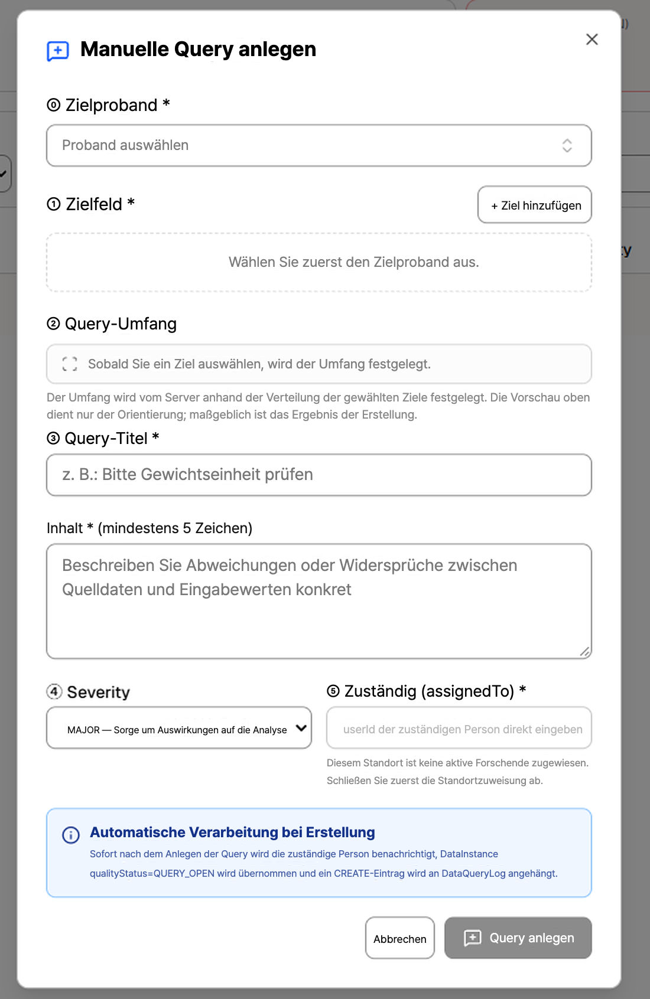
⓪ Zielproband: Pflichtfeld. Wählen Sie ihn zuerst aus.
Ziel hinzufügen: fügt ein Feld hinzu, das bestätigt werden soll. Mehrere Ziele sind möglich 2.2.
③ Query-Titel: Pflichtfeld. Er erscheint unverändert in der Spalte Ziel der Liste.
Inhalt: Pflichtfeld, mindestens 5 Zeichen. Beschreiben Sie konkret den Unterschied oder Widerspruch zwischen Quelldaten und eingegebenem Wert.
④ Severity: gibt die Wichtigkeit an. Der Standardwert ist Wichtig. Sie können ihn auf Gering oder Kritisch ändern.
⑤ Zuständig: Pflichtfeld. Hier legen Sie fest, wer auf diese Query antwortet.
Schließen: schließt das Fenster, ohne eine Query anzulegen.
Hinweis im Zielbereich: „Wählen Sie zuerst den Zielproband aus.“ Solange kein Proband gewählt ist, können Sie hier nichts hinzufügen.
② Query-Umfang: leer. „Sobald Sie ein Ziel auswählen, wird der Umfang festgelegt.“
Hinweis zum Umfang: „Der Umfang wird vom Server anhand der Verteilung der gewählten Ziele festgelegt. Die Anzeige hier ist eine Vorschau, maßgeblich ist das Ergebnis nach dem Anlegen.“ Sie wählen ihn nicht selbst aus.
Im Feld Zuständig ist Direkteingabe eingestellt, und es erscheint der Hinweis „Dieser Einrichtung sind keine aktiven Forscher zugewiesen. Schließen Sie zuerst die Zuordnung der Einrichtung ab.“ Das ist die Ersatzeingabe, wenn es keine Auswahl gibt, und kein Fehler.
Hinweis Automatische Verarbeitung beim Anlegen: Nach dem Anlegen wird die zuständige Person benachrichtigt, der Qualitätsstatus des CRF wechselt auf Query offen, und die Bearbeitungshistorie zeigt den Eintrag der Anlage.
Abbrechen · Query anlegen: Solange nicht alle Pflichtfelder ausgefüllt sind, ist „Query anlegen“ ausgegraut und lässt sich nicht auswählen 2.2.
Zu beachten
Leicht missverständliches Verhalten
- • Wenn keine zuständige Person zur Auswahl steht, schließen Sie zuerst die Zuordnung der Einrichtung ab. Zuständig ist ein Pflichtfeld. Ohne aktiven Forscher in der Einrichtung gibt es nichts auszuwählen. Der vorgesehene Weg: Schließen Sie zuerst die Forscherzuordnung auf dem Bildschirm „Teilnehmende Einrichtungen“ ab und kehren Sie dann hierher zurück.
2.2Ziel festlegen und anlegen
Überblick
Wenn Sie einen Probanden auswählen, öffnet sich der Zielbereich. Sie grenzen dann schrittweise ein: Besuch → CRF → Feld. Sobald Sie alle drei Werte gewählt haben, wird ② Query-Umfang automatisch gefüllt. Diesen Punkt wählen Sie nicht selbst aus. Er ist das Ergebnis, das das System daraus ableitet, wie viele Datensätze die festgelegten Ziele umfassen.
Bildschirmbeschreibung
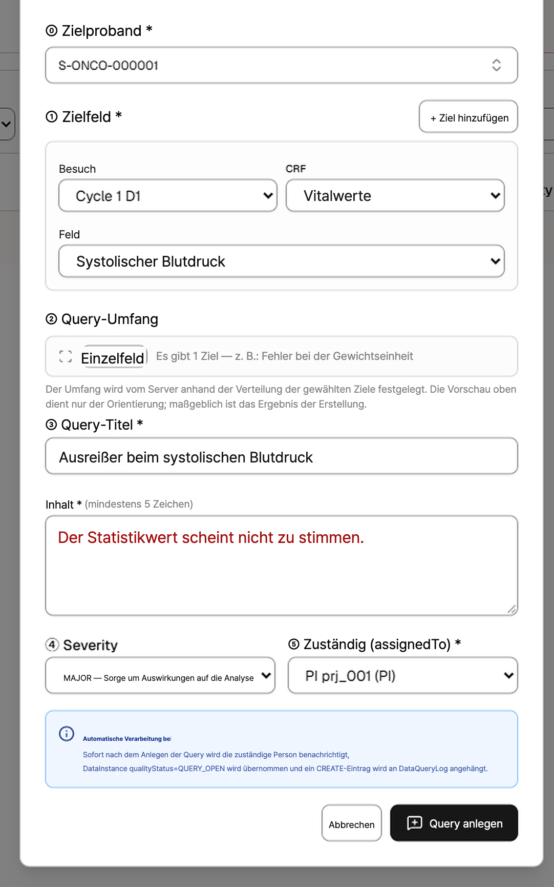
Besuch: wählen Sie aus den Besuchen, die für diesen Probanden angelegt sind.
CRF: wählen Sie aus den CRF, die diesem Besuch zugeordnet sind.
Feld: wählen Sie aus den Feldern dieses CRF das Feld aus, das geklärt werden soll.
② Query-Umfang wird auf Einzelfeld festgelegt, darunter erscheint „Es gibt 1 Ziel.“ Fügen Sie weitere Ziele hinzu, wechselt der Umfang auf einen übergreifenden Wert.
Query anlegen: erstellt die Query. Die Schaltfläche ist erst wählbar, wenn alle Pflichtfelder (Proband · Ziel · Titel · Inhalt · Zuständig) ausgefüllt sind.
Der gewählte Proband wird als Screening No angezeigt. Ändern Sie ihn an dieser Stelle, werden die Ziele darunter zurückgesetzt. Bestätigen Sie ihn deshalb zuerst.
③ Query-Titel: Der Titel ist der Name, über den Sie diese Query in der Liste finden. Nennen Sie deshalb deutlich, was gefragt wird.
Inhalt: Begründen Sie so, dass die zuständige Person die Quelldaten prüfen kann.
④ Severity: wird unverändert in der Spalte Severity der Liste und im Filter verwendet.
⑤ Zuständig: Ist ein Forscher zugeordnet, ändert sich das Feld zu einer Auswahl aus einer Liste 2.1. Die Rolle steht dabei in Klammern.
Abbrechen: verwirft die Eingaben und schließt das Fenster.
Zu beachten
Leicht missverständliches Verhalten
- • Der Query-Umfang steht erst fest, wenn die Query angelegt ist. Der Umfang im Fenster ist eine Vorschau, die endgültige Entscheidung trifft der Server. Bei wiederholt erhobenen CRF kann derselbe Besuch und dasselbe Formular als übergreifend gelten, wenn sich die Wiederholung unterscheidet. Prüfen Sie das Ergebnis nach dem Anlegen in der Spalte Scope der Liste.
2.3Ergebnis der Anlage
Überblick
Nach dem Anlegen schließt sich das Fenster, und Sie kehren zur Liste zurück. Die neue Query erscheint ganz oben in der Liste, und auch die Zahlen der Kennzahlkarten ändern sich. Zu diesem Zeitpunkt ist die zuständige Person bereits benachrichtigt, und der Qualitätsstatus des CRF steht auf Query offen.
Bildschirmbeschreibung
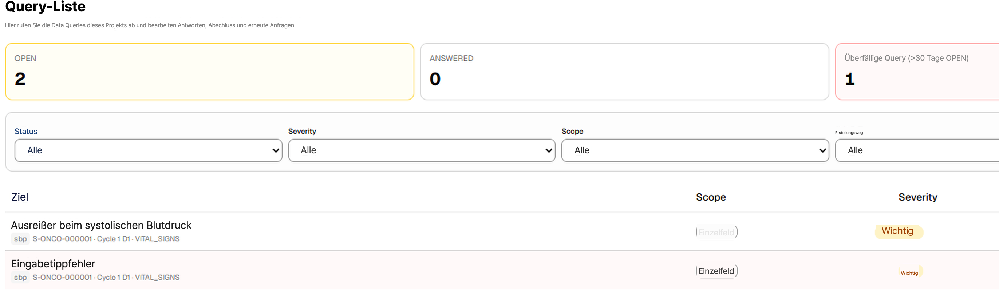
Die neu angelegte Query: wählen Sie den Titel aus, um zu den Query-Details zu gelangen. Die kleine Schrift darunter zeigt Feld · Proband · Besuch · CRF.
OPEN ist um eins gestiegen. Eine neue Query beginnt immer als Unbearbeitet.
ANSWERED bleibt unverändert, bis eine Antwort eingeht. Auch Überfällige Query rechts ändert sich nicht, denn das Alter beträgt 0 Tage und liegt damit außerhalb der 30-Tage-Grenze. Nur Angezeigt steigt mit.
Das Ziel der neuen Query: Die festgelegten Felder, der Proband, der Besuch und der CRF werden unverändert übernommen.
Scope ist der Wert, den der Server beim Anlegen festgelegt hat 2.2.
Severity entspricht genau dem Wert, den Sie im Fenster gewählt haben.
Vorhandene Query bleiben erhalten. Bei Einträgen mit hoher Dauer wird die gesamte Zeile rot angezeigt, damit Sie sie als Erstes bearbeiten.
Zu beachten
Leicht missverständliches Verhalten
- • Wer eine Query angelegt hat, kann selbst darauf antworten. Berechtigt sind die zuständige Person oder der Ersteller. Wenn Frage und Antwort jedoch von derselben Person stammen, verliert die Bestätigung ihren Sinn. Lassen Sie deshalb die zuständige Person die Quelldaten prüfen und antworten.
Beantwortung
- 3.1Query beantworten
- 3.2Über die Dateneingabemaske beantworten
3.1Query beantworten
Überblick
Hier halten Sie fest, was die zuständige Person bei der Prüfung der Quelldaten herausgefunden hat. Gibt es nur ein Ziel, bearbeiten Sie in diesem Fenster Wertänderung und Antwort gemeinsam, und ein einziges Speichern hält beides fest. Hat die Query mehrere Ziele, erhalten Sie nur die Antwort ohne Wertänderung, und sie bekommt den Status Teilweise beantwortet.
Bildschirmbeschreibung
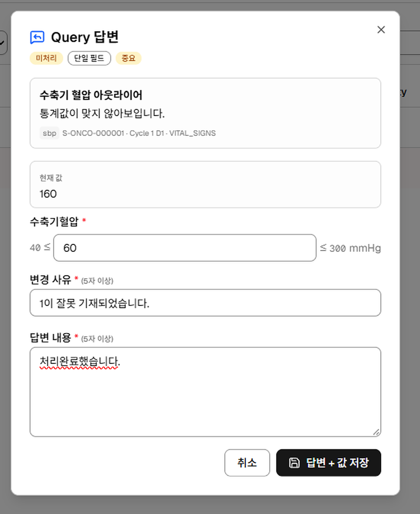
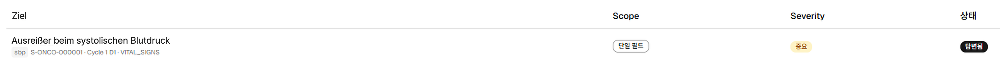
Wertänderung: Weicht der Wert von den Quelldaten ab, ändern Sie ihn hier direkt. Links und rechts stehen die zulässigen Grenzen. Werte außerhalb dieser Grenzen werden beim Speichern beanstandet. Sie können auch antworten, ohne den Wert zu ändern.
Änderungsgrund: nur Pflicht, wenn Sie den Wert geändert haben, mindestens 5 Zeichen. Bleibt der Wert unverändert, wird er nicht verlangt.
Antworttext: immer Pflicht, mindestens 5 Zeichen. Beschreiben Sie das Ergebnis der Prüfung der Quelldaten und ob der Wert geändert wurde.
Antwort + Wert speichern: speichert Wert und Antwort gemeinsam. Wurde der Wert nicht geändert, steht hier Antwort speichern.
Der Status in der Liste wechselt auf Beantwortet. In den Kennzahlen sinkt OPEN, und ANSWERED steigt. Jetzt wartet die Query auf den Abschluss durch den Datenmanager 4.1.
Status · Scope · Severity-Abzeichen: zeigen, auf welche Query Sie gerade antworten.
Frageinhalt: Titel · Text · Ziel. Lesen Sie ihn unbedingt, bevor Sie antworten.
Aktueller Wert: der jetzt gespeicherte Wert. Vergleichen Sie ihn mit dem Wert im Eingabefeld darunter, um zu sehen, was sich ändert.
Schließen: schließt das Fenster, ohne zu antworten.
Abbrechen: verwirft die Eingaben und schließt das Fenster.
Zu beachten
Leicht missverständliches Verhalten
- • Nicht jeder kann antworten. Sie müssen eine Rolle mit Antwortberechtigung haben und zugleich die zuständige Person oder der Ersteller dieser Query sein. Fehlt die Option Antworten in der Liste, sind Sie nicht die betroffene Person. Prüfen Sie in der Spalte Zuständig, an wen Sie die Query weitergeben.
3.2Über die Dateneingabemaske beantworten
Überblick
Wenn Sie im Zeilenaktionsmenü zur Dateneingabemaske wechseln, öffnet sich der CRF mit dem Feld, zu dem die Query gehört. Hier können Sie mit den tatsächlichen Werten vor Augen antworten, was bei einem Abgleich mit den Quelldaten bequemer ist. Hat ein Feld mehrere Query, dann werden mehrere Karten untereinander angezeigt.
Bildschirmbeschreibung

Abschließen: schließt eine beantwortete Query direkt an dieser Stelle ab. Sichtbar für Datenmanager oder die zuständige Person der Query.
Antwortkommentar: tragen Sie hier die Antwort auf eine unbearbeitete Query ein. Mindestens 5 Zeichen. Beim Klick auf Speichern im Formular wird der Kommentar zusammen mit dem Wert festgehalten.
Diesen Kommentar als Änderungsgrund verwenden: Bei geändertem Wert ersetzt dieser Kommentar den sonst gesondert verlangten Änderungsgrund.
Im Banner oben im Bildschirm stehen Unbearbeitete Query: N und Warten auf Abschluss: N. Die erste Zahl zählt die Query, auf die Sie antworten müssen. Die zweite zählt die Query, die auf den Abschluss wartet. Die beiden Aufgaben sind verschieden.
Die Karte Beantwortet: Die Antwort ist bereits eingegangen. Der Hinweis „Die Antwort wurde erfasst. Bitte nach der Prüfung abschließen.“ sagt Ihnen den nächsten Schritt.
Verlauf und Details anzeigen: zeigt den gesamten Dialog und den Bearbeitungsverlauf dieser Query.
Karte Unbearbeitet: eine Query, auf die Sie noch nicht geantwortet haben. Am rechten Ende des Feldes zeigt das Query-Symbol die Anzahl der daran hängenden Query.
Art der Lösung: keine Auswahl, sondern ein Ergebnis aus der Frage, ob der Wert geändert wurde. Ändern Sie den Wert, wird Wertkorrektur gesetzt. Ändern Sie ihn nicht, wird automatisch Keine Änderung gesetzt.
Zu beachten
Unbedingt prüfen Datenschäden · Formular nicht abschließbar
- • Die Antwort auf dieser Seite wird erst gespeichert, wenn Sie das Formular speichern. Wer nur einen Kommentar schreibt und die Seite verlässt, dessen Eingabe bleibt nicht erhalten. Anders ist das im Antwortfenster der Query-Liste, das in einem Schritt bis zum Speichern führt. Haben Sie einen Kommentar geschrieben, bestätigen Sie ihn unbedingt mit Speichern.
Abschluss und erneute Anfrage
- 4.1Query abschließen
- 4.2Erneute Anfrage (Reopen)
4.1Query abschließen
Überblick
Ein Fenster zum Abschließen einer Query, nachdem Sie die Antwort geprüft haben. Nur der Datenmanager kann es öffnen, und zwar nur im Status Beantwortet. Der Abschluss ist kein endgültiges Ende, sondern ein Abschluss, der sich rückgängig machen lässt. Wenn später erneut etwas zu prüfen ist, knüpfen Sie mit einer erneuten Anfrage an 4.2 an.
Bildschirmbeschreibung
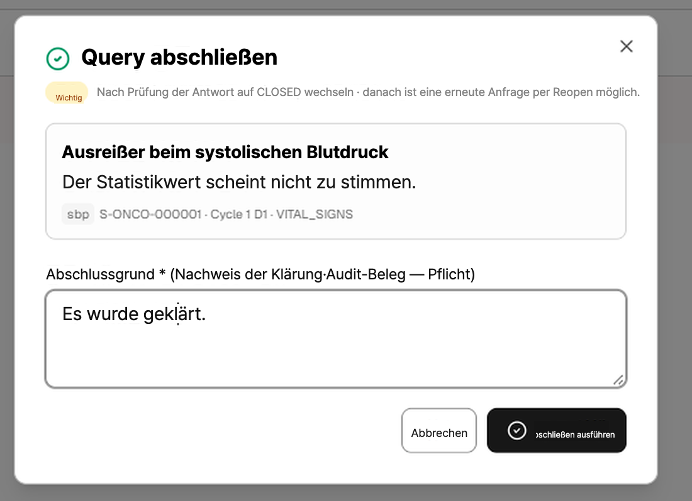
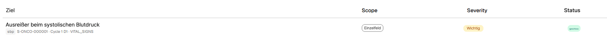
Abschlussgrund: Pflichtfeld. Halten Sie fest, wodurch die Frage geklärt wurde. Bleibt das Feld leer, wird das Speichern abgelehnt.
Abschließen ausführen: schließt die Query.
Der Status in der Liste wechselt auf Abgeschlossen, und die Query verschwindet aus der Kennzahl ANSWERED.
Der Hinweis oben im Fenster lautet „Nach Prüfung der Antwort auf CLOSED wechseln · danach ist eine erneute Anfrage per Reopen möglich“. Er zeigt, dass der Abschluss nicht der endgültige Status ist.
Frageinhalt und Ziel: prüfen Sie, was Sie gerade abschließen.
Das Etikett nennt den Grund: „Nachweis der Klärung · Audit-Nachweis — Pflicht“. Der Grund muss erhalten bleiben, weil klinische Daten festhalten müssen, warum etwas geschlossen wurde.
Abbrechen: schließt das Fenster ohne Abschluss.
Schließen: dieselbe Wirkung wie Abbrechen.
Zu beachten
Unbedingt prüfen Datenschäden · Formular nicht abschließbar
- • Der Abschlussgrund ist ein Audit-Nachweis. Ein Eintrag wie „Geprüft“ ohne Inhalt lässt später nicht erklären, warum die Query geklärt wurde. Halten Sie fest, was Sie geprüft haben und auf welcher Grundlage Sie die Query geschlossen haben.
4.2Erneute Anfrage (Reopen)
Überblick
Ein Fenster, um eine abgeschlossene Query erneut anzufragen. Es öffnet sich nur im Status Abgeschlossen und nur für Monitor und Datenmanager. Wichtig: Die ursprüngliche Query wird nicht wiederhergestellt. Die alte Query bleibt mit dem Status Erneut angefragt stehen, und es entsteht eine zusätzliche neue Query, auf die Sie eine Antwort erhalten.
Bildschirmbeschreibung
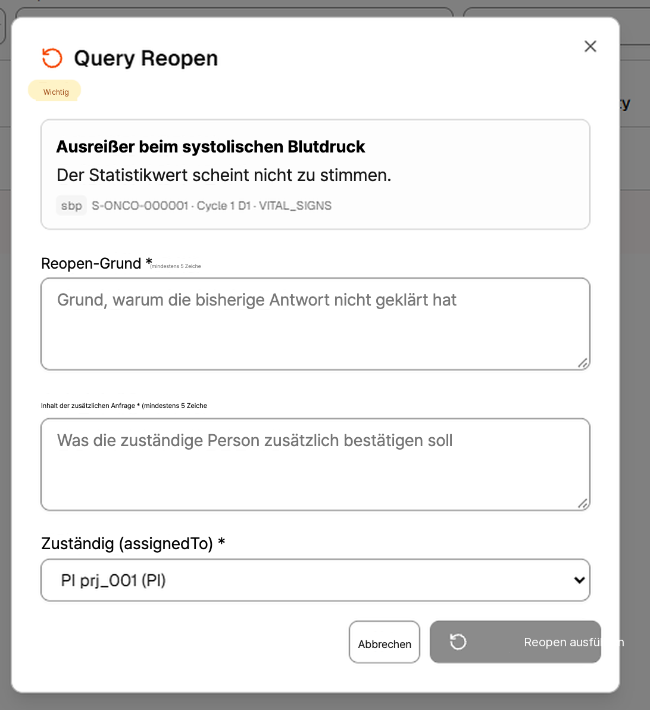
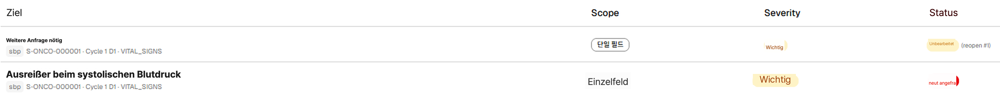
Reopen-Grund: Pflicht, mindestens 5 Zeichen. Halten Sie fest, warum die bisherige Antwort die Frage nicht geklärt hat.
Zusätzlicher Frageinhalt: Pflicht, mindestens 5 Zeichen. Hier steht, was die zuständige Person zusätzlich bestätigen soll. Dieser Text wird zum Inhalt der neuen Query.
Zuständig: die Person, die die neue Query erhält. Die bisher zuständige Person ist standardmäßig vorausgewählt, Sie können sie ändern.
Reopen ausführen: startet die erneute Anfrage. Solange nicht beide Gründe ausgefüllt sind, ist die Schaltfläche ausgegraut und nicht wählbar.
Der Status der ursprünglichen Query wechselt auf Erneut angefragt. Daneben erscheint in der Liste eine neue Query mit dem Status Unbearbeitet. Die neue Zeile zeigt außerdem an, wie oft die Query schon erneut angefragt wurde, zum Beispiel (reopen #1).
Severity übernimmt den Wert der ursprünglichen Query.
Inhalt der abgeschlossenen Query und Ziel: prüfen Sie, was erneut gefragt wird.
Abbrechen: schließt das Fenster ohne erneute Anfrage.
Schließen: dieselbe Wirkung wie Abbrechen.
Zu beachten
Leicht missverständliches Verhalten
- • Mit einer erneuten Anfrage kommt eine Aufgabe hinzu. Zu beantworten ist nun die neu entstandene Query. Die ursprüngliche Query bleibt zur Dokumentation des Verlaufs im Status Erneut angefragt erhalten. Dass in der Liste zwei Einträge stehen, ist normal. Bearbeiten Sie den Eintrag mit dem Status Unbearbeitet.